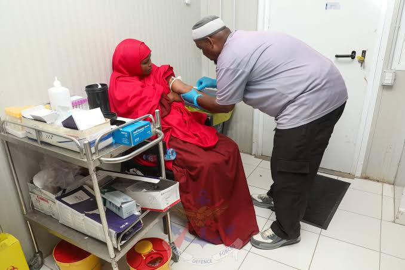

Business Permits and Licensing
Provides business registration support, permits and licences to enable businesses to operate legally.
Healthcare Services
Provides medical services through county hospitals, health centres and dispensaries.
Agriculture and Livestock Support
Offers agricultural extension services, livestock support and farming advice to improve productivity.
County Revenue Services
Facilitates payment and collection of county taxes, fees and other revenue.
Water and Sanitation Services
Promotes access to safe water and improved sanitation facilities.
Roads and Infrastructure
Supports road construction, maintenance and improvement of public infrastructure.
Education and Youth Development
Supports early childhood education, youth empowerment and sports development programmes.
Public Participation
Provides opportunities for residents to participate in county planning and decision-making.